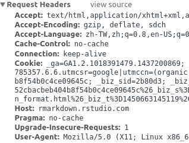
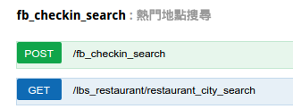

2015年12月06日
Agenda
HTTP request

開發者了解 HTTP 請求 能處理更多爬蟲情境
- rvest 讓我們模仿使用瀏覽器的方式造訪網站，取得表格與表單
- 親自發出HTTP請求的使用情境仍然很多
- 例如：API的文件會註明使用何種 HTTP 請求方式取得資料
客戶端透過「動詞」與「URI」和伺服器請求服務

headers: 客戶端和伺服器的對話有更多細節
 
API 文件註明「動詞」與「 URI 」
…還有其他需要填寫的參數
接下來會用資策會 SER API 示範如何依照文件指示取得資料

使用 httr套件
library(httr)
- httr::POST
- httr::GET
GET把所有請求參數放在URL裡
尋找餐廳資訊
res = httr::GET("http://api.ser.ideas.iii.org.tw:80/api/lbs_restaurant/restaurant_city_search?sort=score&token=api_doc_token&limit=5")
# 用content取出回傳的內容
str(content(res))
## List of 3 ## $ message: chr "success" ## $ total : int 6343 ## $ result :List of 1 ## ..$ restaurant:List of 5 ## .. ..$ :List of 16 ## .. .. ..$ id : chr "2051" ## .. .. ..$ focus_url : chr "http://www.ipeen.com.tw/focus/327" ## .. .. ..$ url : chr "http://www.ipeen.com.tw/shop/84365" ## .. .. ..$ shopname : chr "芒果恰恰冰館(台北光復總店)" ## .. .. ..$ address : chr "台北市大安區光復南路562號" ## .. .. ..$ avg_cost : chr "139" ## .. .. ..$ tel : chr "02-2702-9506" ## .. .. ..$ image : chr "http://iphoto.ipeen.com.tw/photo/ipeen/200x200/vip/5/6/3/store_84365/sp84365_20130528122523263.jpg" ## .. .. ..$ score : chr "5" ## .. .. ..$ views : chr "4034197" ## .. .. ..$ collection : chr "1362" ## .. .. ..$ business_hour: chr "週一\t11:00~23:00\t\r\n週二\t11:00~23:00\t\r\n週三\t11:00~23:00\t\r\n週四\t11:00~23:00\t\r\n週五\t11:00~23:00\t\r\n週六\t11:00~"| __truncated__ ## .. .. ..$ review : chr "170" ## .. .. ..$ city : chr "台北市" ## .. .. ..$ type : chr "冰品、飲料、甜湯" ## .. .. ..$ crawltime : chr "2015-07-20 13:09:07" ## .. ..$ :List of 16 ## .. .. ..$ id : chr "1509" ## .. .. ..$ focus_url : chr "http://www.ipeen.com.tw/focus/158" ## .. .. ..$ url : chr "http://www.ipeen.com.tw/shop/35880" ## .. .. ..$ shopname : chr "亞尼克菓子工房(內湖店)" ## .. .. ..$ address : chr "台北市內湖區瑞湖街178巷15號" ## .. .. ..$ avg_cost : chr "242" ## .. .. ..$ tel : chr "02-2657-4837" ## .. .. ..$ image : chr "http://iphoto.ipeen.com.tw/photo/ipeen/200x200/vip/0/8/8/store_35880/sp35880_20130111105353495.jpg" ## .. .. ..$ score : chr "5" ## .. .. ..$ views : chr "6559216" ## .. .. ..$ collection : chr "691" ## .. .. ..$ business_hour: chr "週一\t10:00~22:00\t\r\n週二\t10:00~22:00\t\r\n週三\t10:00~22:00\t\r\n週四\t10:00~22:00\t\r\n週五\t10:00~22:00\t\r\n週六\t10:00~"| __truncated__ ## .. .. ..$ review : chr "163" ## .. .. ..$ city : chr "台北市" ## .. .. ..$ type : chr "烘焙、甜點、零食" ## .. .. ..$ crawltime : chr "2015-07-20 13:41:47" ## .. ..$ :List of 16 ## .. .. ..$ id : chr "327" ## .. .. ..$ focus_url : chr "http://www.ipeen.com.tw/focus/1164" ## .. .. ..$ url : chr "http://www.ipeen.com.tw/shop/617022" ## .. .. ..$ shopname : chr "阿聰師的糕餅主意(台中秋紅谷館)" ## .. .. ..$ address : chr "台中市西屯區臺灣大道三段630號" ## .. .. ..$ avg_cost : chr "214" ## .. .. ..$ tel : chr "04-2451-0199" ## .. .. ..$ image : chr "http://iphoto.ipeen.com.tw/photo/ipeen/200x200/vip/2/2/0/store_617022/sp617022_20141024100139472.jpg" ## .. .. ..$ score : chr "5" ## .. .. ..$ views : chr "19387607" ## .. .. ..$ collection : chr "183" ## .. .. ..$ business_hour: chr "週一\t09:00~22:00\t\r\n週二\t09:00~22:00\t\r\n週三\t09:00~22:00\t\r\n週四\t09:00~22:00\t\r\n週五\t09:00~22:00\t\r\n週六\t09:00~"| __truncated__ ## .. .. ..$ review : chr "145" ## .. .. ..$ city : chr "台中市" ## .. .. ..$ type : chr "烘焙、甜點、零食" ## .. .. ..$ crawltime : chr "2015-07-20 11:47:04" ## .. ..$ :List of 16 ## .. .. ..$ id : chr "3147" ## .. .. ..$ focus_url : chr "http://www.ipeen.com.tw/focus/832" ## .. .. ..$ url : chr "http://www.ipeen.com.tw/shop/37453" ## .. .. ..$ shopname : chr "先麥芋頭酥(台中中港店)" ## .. .. ..$ address : chr "台中市西屯區臺灣大道三段570號" ## .. .. ..$ avg_cost : chr "224" ## .. .. ..$ tel : chr "04-2708-2268" ## .. .. ..$ image : chr "http://iphoto.ipeen.com.tw/photo/ipeen/200x200/vip/3/5/4/store_37453/sp37453_20120204133855607.jpg" ## .. .. ..$ score : chr "5" ## .. .. ..$ views : chr "5168402" ## .. .. ..$ collection : chr "157" ## .. .. ..$ business_hour: chr "週一\t08:30~22:00\t\r\n週二\t08:30~22:00\t\r\n週三\t08:30~22:00\t\r\n週四\t08:30~22:00\t\r\n週五\t08:30~22:00\t\r\n週六\t08:30~"| __truncated__ ## .. .. ..$ review : chr "137" ## .. .. ..$ city : chr "台中市" ## .. .. ..$ type : chr "烘焙、甜點、零食" ## .. .. ..$ crawltime : chr "2015-07-20 12:18:30" ## .. ..$ :List of 16 ## .. .. ..$ id : chr "1594" ## .. .. ..$ focus_url : chr "http://www.ipeen.com.tw/focus/1028" ## .. .. ..$ url : chr "http://www.ipeen.com.tw/shop/57122" ## .. .. ..$ shopname : chr "羅東林業文化園區" ## .. .. ..$ address : chr "宜蘭縣羅東鎮中正北路118號" ## .. .. ..$ avg_cost : chr "0" ## .. .. ..$ tel : chr "03-954-5114" ## .. .. ..$ image : chr "http://iphoto.ipeen.com.tw/photo/ipeen/200x200/def/0/4/5/787540/787540_20150103234752_1527.jpg" ## .. .. ..$ score : chr "5" ## .. .. ..$ views : chr "229825" ## .. .. ..$ collection : chr "306" ## .. .. ..$ business_hour: chr "" ## .. .. ..$ review : chr "131" ## .. .. ..$ city : chr "宜蘭縣" ## .. .. ..$ type : chr "休閒/遊憩景點" ## .. .. ..$ crawltime : chr "2015-07-20 12:04:00"
用神奇的magrittr語法讓程式變漂亮吧
library(magrittr) res %>% content %>% str
## List of 3 ## $ message: chr "success" ## $ total : int 6343 ## $ result :List of 1 ## ..$ restaurant:List of 5 ## .. ..$ :List of 16 ## .. .. ..$ id : chr "2051" ## .. .. ..$ focus_url : chr "http://www.ipeen.com.tw/focus/327" ## .. .. ..$ url : chr "http://www.ipeen.com.tw/shop/84365" ## .. .. ..$ shopname : chr "芒果恰恰冰館(台北光復總店)" ## .. .. ..$ address : chr "台北市大安區光復南路562號" ## .. .. ..$ avg_cost : chr "139" ## .. .. ..$ tel : chr "02-2702-9506" ## .. .. ..$ image : chr "http://iphoto.ipeen.com.tw/photo/ipeen/200x200/vip/5/6/3/store_84365/sp84365_20130528122523263.jpg" ## .. .. ..$ score : chr "5" ## .. .. ..$ views : chr "4034197" ## .. .. ..$ collection : chr "1362" ## .. .. ..$ business_hour: chr "週一\t11:00~23:00\t\r\n週二\t11:00~23:00\t\r\n週三\t11:00~23:00\t\r\n週四\t11:00~23:00\t\r\n週五\t11:00~23:00\t\r\n週六\t11:00~"| __truncated__ ## .. .. ..$ review : chr "170" ## .. .. ..$ city : chr "台北市" ## .. .. ..$ type : chr "冰品、飲料、甜湯" ## .. .. ..$ crawltime : chr "2015-07-20 13:09:07" ## .. ..$ :List of 16 ## .. .. ..$ id : chr "1509" ## .. .. ..$ focus_url : chr "http://www.ipeen.com.tw/focus/158" ## .. .. ..$ url : chr "http://www.ipeen.com.tw/shop/35880" ## .. .. ..$ shopname : chr "亞尼克菓子工房(內湖店)" ## .. .. ..$ address : chr "台北市內湖區瑞湖街178巷15號" ## .. .. ..$ avg_cost : chr "242" ## .. .. ..$ tel : chr "02-2657-4837" ## .. .. ..$ image : chr "http://iphoto.ipeen.com.tw/photo/ipeen/200x200/vip/0/8/8/store_35880/sp35880_20130111105353495.jpg" ## .. .. ..$ score : chr "5" ## .. .. ..$ views : chr "6559216" ## .. .. ..$ collection : chr "691" ## .. .. ..$ business_hour: chr "週一\t10:00~22:00\t\r\n週二\t10:00~22:00\t\r\n週三\t10:00~22:00\t\r\n週四\t10:00~22:00\t\r\n週五\t10:00~22:00\t\r\n週六\t10:00~"| __truncated__ ## .. .. ..$ review : chr "163" ## .. .. ..$ city : chr "台北市" ## .. .. ..$ type : chr "烘焙、甜點、零食" ## .. .. ..$ crawltime : chr "2015-07-20 13:41:47" ## .. ..$ :List of 16 ## .. .. ..$ id : chr "327" ## .. .. ..$ focus_url : chr "http://www.ipeen.com.tw/focus/1164" ## .. .. ..$ url : chr "http://www.ipeen.com.tw/shop/617022" ## .. .. ..$ shopname : chr "阿聰師的糕餅主意(台中秋紅谷館)" ## .. .. ..$ address : chr "台中市西屯區臺灣大道三段630號" ## .. .. ..$ avg_cost : chr "214" ## .. .. ..$ tel : chr "04-2451-0199" ## .. .. ..$ image : chr "http://iphoto.ipeen.com.tw/photo/ipeen/200x200/vip/2/2/0/store_617022/sp617022_20141024100139472.jpg" ## .. .. ..$ score : chr "5" ## .. .. ..$ views : chr "19387607" ## .. .. ..$ collection : chr "183" ## .. .. ..$ business_hour: chr "週一\t09:00~22:00\t\r\n週二\t09:00~22:00\t\r\n週三\t09:00~22:00\t\r\n週四\t09:00~22:00\t\r\n週五\t09:00~22:00\t\r\n週六\t09:00~"| __truncated__ ## .. .. ..$ review : chr "145" ## .. .. ..$ city : chr "台中市" ## .. .. ..$ type : chr "烘焙、甜點、零食" ## .. .. ..$ crawltime : chr "2015-07-20 11:47:04" ## .. ..$ :List of 16 ## .. .. ..$ id : chr "3147" ## .. .. ..$ focus_url : chr "http://www.ipeen.com.tw/focus/832" ## .. .. ..$ url : chr "http://www.ipeen.com.tw/shop/37453" ## .. .. ..$ shopname : chr "先麥芋頭酥(台中中港店)" ## .. .. ..$ address : chr "台中市西屯區臺灣大道三段570號" ## .. .. ..$ avg_cost : chr "224" ## .. .. ..$ tel : chr "04-2708-2268" ## .. .. ..$ image : chr "http://iphoto.ipeen.com.tw/photo/ipeen/200x200/vip/3/5/4/store_37453/sp37453_20120204133855607.jpg" ## .. .. ..$ score : chr "5" ## .. .. ..$ views : chr "5168402" ## .. .. ..$ collection : chr "157" ## .. .. ..$ business_hour: chr "週一\t08:30~22:00\t\r\n週二\t08:30~22:00\t\r\n週三\t08:30~22:00\t\r\n週四\t08:30~22:00\t\r\n週五\t08:30~22:00\t\r\n週六\t08:30~"| __truncated__ ## .. .. ..$ review : chr "137" ## .. .. ..$ city : chr "台中市" ## .. .. ..$ type : chr "烘焙、甜點、零食" ## .. .. ..$ crawltime : chr "2015-07-20 12:18:30" ## .. ..$ :List of 16 ## .. .. ..$ id : chr "1594" ## .. .. ..$ focus_url : chr "http://www.ipeen.com.tw/focus/1028" ## .. .. ..$ url : chr "http://www.ipeen.com.tw/shop/57122" ## .. .. ..$ shopname : chr "羅東林業文化園區" ## .. .. ..$ address : chr "宜蘭縣羅東鎮中正北路118號" ## .. .. ..$ avg_cost : chr "0" ## .. .. ..$ tel : chr "03-954-5114" ## .. .. ..$ image : chr "http://iphoto.ipeen.com.tw/photo/ipeen/200x200/def/0/4/5/787540/787540_20150103234752_1527.jpg" ## .. .. ..$ score : chr "5" ## .. .. ..$ views : chr "229825" ## .. .. ..$ collection : chr "306" ## .. .. ..$ business_hour: chr "" ## .. .. ..$ review : chr "131" ## .. .. ..$ city : chr "宜蘭縣" ## .. .. ..$ type : chr "休閒/遊憩景點" ## .. .. ..$ crawltime : chr "2015-07-20 12:04:00"
POST 的請求參數以 list 放在 body 中
透過經緯度座標、半徑搜尋一週內Facebook上的熱門打卡點
res = httr::POST(
url = "http://api.ser.ideas.iii.org.tw:80/api/fb_checkin_search",
body = list(
coordinates="25.041399,121.554233",
radius="0.1",
token = "api_doc_token"),
encode = "form")
res %>% content %>% str
## List of 3 ## $ message: chr "success" ## $ total : int 3 ## $ result :List of 3 ## ..$ :List of 8 ## .. ..$ id : chr "329877747068359" ## .. ..$ name : chr "Ice Monster" ## .. ..$ category : chr "Food/beverages" ## .. ..$ latitude : chr "25.0413066737470000000000000" ## .. ..$ longitude : chr "121.5551380471800000000000000" ## .. ..$ checkins : chr "120566" ## .. ..$ checkins_upcount: chr "184" ## .. ..$ startdate : chr "2015-12-05 00:00:00" ## ..$ :List of 8 ## .. ..$ id : chr "113328975408596" ## .. ..$ name : chr "Dazzling Cafe蜜糖吐司" ## .. ..$ category : chr "Local business" ## .. ..$ latitude : chr "25.0409762845020000000000000" ## .. ..$ longitude : chr "121.5538671013800000000000000" ## .. ..$ checkins : chr "63793" ## .. ..$ checkins_upcount: chr "97" ## .. ..$ startdate : chr "2015-12-05 00:00:00" ## ..$ :List of 8 ## .. ..$ id : chr "1597819550500308" ## .. ..$ name : chr "韓國第一品牌 八色烤肉" ## .. ..$ category : chr "Restaurant/cafe" ## .. ..$ latitude : chr "25.0421600000000000000000000" ## .. ..$ longitude : chr "121.5533066000000000000000000" ## .. ..$ checkins : chr "13412" ## .. ..$ checkins_upcount: chr "560" ## .. ..$ startdate : chr "2015-12-05 00:00:00"
Session / cookies

爬蟲送出對的動詞與 URI 不一定拿得到想要的資源
- HTTP 請求的細節會影響伺服器是否想給你資料
- 伺服器的程式可能根據請求細節下判斷，是否回傳資料
- 例如：Cookie是否狀態正確？
Cookies 記錄客戶端狀態 Session 是使用者與網站互動歷程
- Cookies：瀏覽器的變數，用來簡單記錄使用者的狀態。
Session：原意是指使用者進入網站到離開網站的這段互動的時間。一般來說客戶端或伺服端一方要記錄互動的狀態。Cookie是常見客戶端用來記錄使用者互動的方式。
rvest::html_session
Ptt 八卦版18禁詢問頁面 讓爬蟲程式無法進到文章列表
library(rvest)
read_html("https://www.ptt.cc/bbs/Gossiping/index.html") %>% html_text(trim = T)
## [1] "批踢踢實業坊\n\n\n\n\n\n\n\n\n\n\n\n\t\t\n\n\n\n var _gaq = _gaq || [];\n _gaq.push(['_setAccount', 'UA-32365737-1']);\n _gaq.push(['_setDomainName', 'ptt.cc']);\n _gaq.push(['_trackPageview']);\n\n (function() {\n var ga = document.createElement('script'); ga.type = 'text/javascript'; ga.async = true;\n ga.src = ('https:' == document.location.protocol ? 'https://ssl' : 'http://www') + '.google-analytics.com/ga.js';\n var s = document.getElementsByTagName('script')[0]; s.parentNode.insertBefore(ga, s);\n })();\n\n\n\n\n\t\n \n\t\t\n\n \n \n 本網站已依網站內容分級規定處理\n\n 警告︰您即將進入之看板內容需滿十八歲方可瀏覽。\n\n 根據「電腦網路內容分級處理辦法」第六條第三款規定，本網站已於各限制級網頁依照台灣網站分級推廣基金會之規定標示。\n 若您尚未年滿十八歲，請點選離開。若您已滿十八歲，亦不可將本區之內容派發、傳閱、出售、出租、交給或借予年齡未滿18歲的人士瀏覽，或將本網站內容向該人士出示、播放或放映。\n \n\n\n\n \n \n 我同意，我已年滿十八歲進入\n 未滿十八歲或不同意本條款離開"
必須持有over18的cookie 伺服器才不會重導向

必須持有over18的cookie 伺服器才不會重導向

使用rvest的session物件記錄cookie
session = rvest::html_session(url = "https://www.ptt.cc/bbs/Gossiping/index.html")
form = session %>%
html_node("form") %>%
html_form()
session_redirected = rvest::submit_form(session = session, form = form )
## Submitting with 'yes'
在重導向的Session物件中取得資料
session_redirected %>%
html_node("body") %>%
html_nodes(".title") %>%
html_text(trim=T)
## [1] "Re: [問卦] 大家對金城武的評價?" ## [2] "[問卦] 肥宅如何搭訕小7女店員？" ## [3] "Re: [ＦＢ] 柯文哲：反省" ## [4] "Re: [新聞] 23歲男找不到工作 幫妹慶生後燒炭亡" ## [5] "[爆卦] 黃安:大家一起來支持一下郭冠英先生！" ## [6] "Re: [問卦] 台灣女權真的高嗎？" ## [7] "Re: [新聞] 不穿西裝接見外賓 柯：向西方文明優越" ## [8] "[公告] 八卦板板規(2015.12.01)" ## [9] "[徵求]104.12.16下午2點多國道一號南下行車紀錄" ## [10] "[徵求] 12/15台中市漢翔上墩路口行車紀錄器" ## [11] "[公告] 2015年「代表字」與「代表成語」投票決選" ## [12] "[公告] 十二月置底閒聊區"
Session物件幫我們保留了Cookie
session_redirected %>% cookies
| domain | flag | path | secure | expiration | name | value |
|---|---|---|---|---|---|---|
| www.ptt.cc | FALSE | / | FALSE | NA | over18 | 1 |
References
延伸閱讀
- HTTP: The Protocol Every Web Developer Must Know - Part 1 淺白的 HTTP 協定介紹文章

- What are sessions? How do they work? 對Session有淺白的介紹